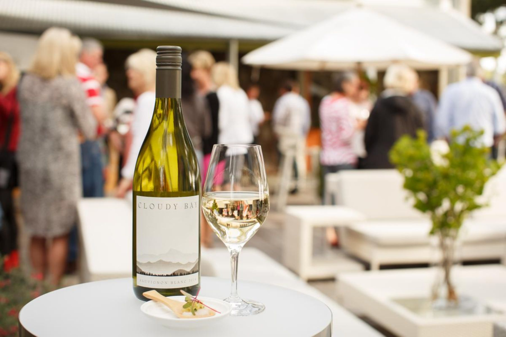
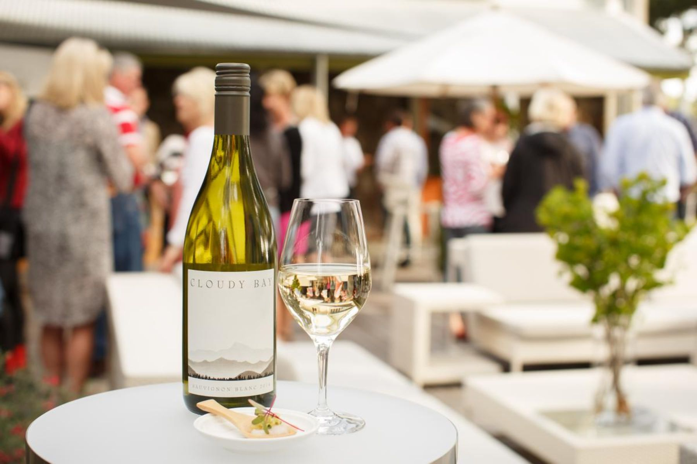

Home
Regions
West Coast
Marlborough
Central Otago
Wellington
Auckland
Map
History
Contact
Centrel Otago
Otakou
Check out The Long Weekends top five attraction in central Otago!
Spend a day with an Alasken Malamute
Spend a day with some of the coolest dogs in the world, Our Kennel of over 40 dogs are traditional Arctic sled dogs, Alaskan Malamutes, Siberian Huskies and Alaskan Huskies. The same dogs used for racing and traditional purposes in the Arctic. Most of our dogs are veterans of the North American race circuit, including traversing 1000miles of Alaska and the Yukon in the “Iditarod” and the “Yukon Quest”. The first and only NZ team to do so. Come meet these phenomenal athletes and feel the thrill of driving them.

Wine Tastings at NZs top wineries
The best wineries near Queenstown offer wine tasting, delicious dining, and the chance to meet the winemaker with winery tours and events. With 75 wineries only a 20-minute drive of Queenstown, and over a hundred more within 40 minutes, you’re in the heart of the world’s southernmost wine region. Taste some of the world’s finest Pinot Noir, before enjoying a winery lunch created by our talented local chefs. Whether your style is fine dining in award-winning winery restaurants, woodfired pizza, or a picnic of local cheese and wine amidst the vines, Queenstown vineyards are a food and wine lover’s delight. With many beautiful wineries and cellar doors nearby, you’re never more than a few minutes away from a taste of the local terroir and a plate of sensational food.
Bungy Jump Skippers Canyon
As you shuffle out to the edge of the bridge, heart pounding and mind racing, remember this – you’ve found yourself at the World Home of Bungy. This is the original. Many people have come and gone, on a mission to push the limits and test themselves. Time for you to make the same leap of faith.
Hit the slopes on New Zealands Most pristene mountion range
Experience big mountain terrain at The Remarkables with sun-soaked chutes and untouched snow. Test out your skills in one of seven parks or take your first turns in our massive learner’s area. The Remarkables offers terrain and facilities that suit first-timers to seasoned skiers and snowboarders!
Cuise Lake Wapatipu on the Ernslaw
Embark on a scenic cruise on the TSS Earnslaw Steamship - the only steamship operating in the Southern Hemisphere! Just minutes from the center of Queenstown, you'll take a 90 minute journey across the turquoise waters of Lake Wakatipu. Relax as you pass by snow capped peaks of The Remarkables, Cecil Peak and Walter Peak, completely surrounded by the tranquility of nature. As mesmerizing as the scenery is, make sure to spend some time indoors at the mini-museum and engine room to appreciate the historical significance of this steamship that is not to be missed.

![Spend a day with an Alasken Malamute Spend a day with some of the coolest dogs in the world, Our Kennel of over 40 dogs are traditional Arctic sled dogs, Alaskan Malamutes, Siberian Huskies and Alaskan Huskies. The same dogs used for racing and traditional purposes in the Arctic. Most of our dogs are veterans of the North American race circuit, including traversing 1000miles of Alaska and the Yukon in the “Iditarod” and the “Yukon Quest”. The first and only NZ team to do so. Come meet these phenomenal athletes and feel the thrill of driving them.](dog.jpeg){kind=link}
![ Wine Tastings at NZs top wineries The best wineries near Queenstown offer wine tasting, delicious dining, and the chance to meet the winemaker with winery tours and events. With 75 wineries only a 20-minute drive of Queenstown, and over a hundred more within 40 minutes, you’re in the heart of the world’s southernmost wine region. Taste some of the world’s finest Pinot Noir, before enjoying a winery lunch created by our talented local chefs. Whether your style is fine dining in award-winning winery restaurants, woodfired pizza, or a picnic of local cheese and wine amidst the vines, Queenstown vineyards are a food and wine lover’s delight. With many beautiful wineries and cellar doors nearby, you’re never more than a few minutes away from a taste of the local terroir and a plate of sensational food.](assets/img/wine.jpeg){kind=link}
{kind=link}
![Cuise Lake Wapatipu on the Ernslaw Embark on a scenic cruise on the TSS Earnslaw Steamship - the only steamship operating in the Southern Hemisphere! Just minutes from the center of Queenstown, you'll take a 90 minute journey across the turquoise waters of Lake Wakatipu. Relax as you pass by snow capped peaks of The Remarkables, Cecil Peak and Walter Peak, completely surrounded by the tranquility of nature. As mesmerizing as the scenery is, make sure to spend some time indoors at the mini-museum and engine room to appreciate the historical significance of this steamship that is not to be missed.](assets/img/lake-wakatipu.jpeg){kind=link}